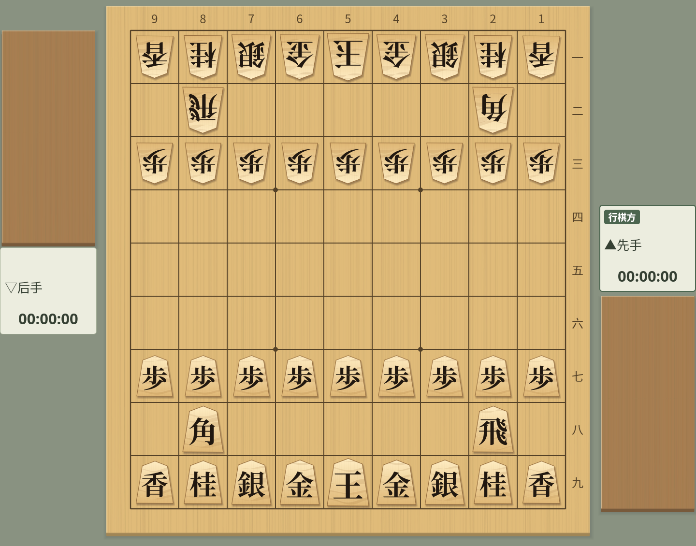
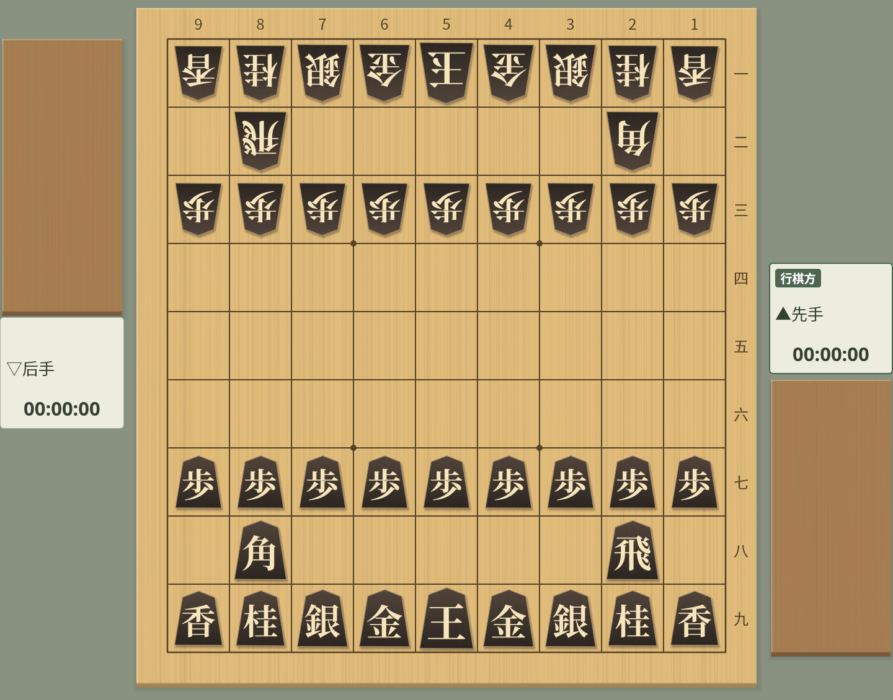
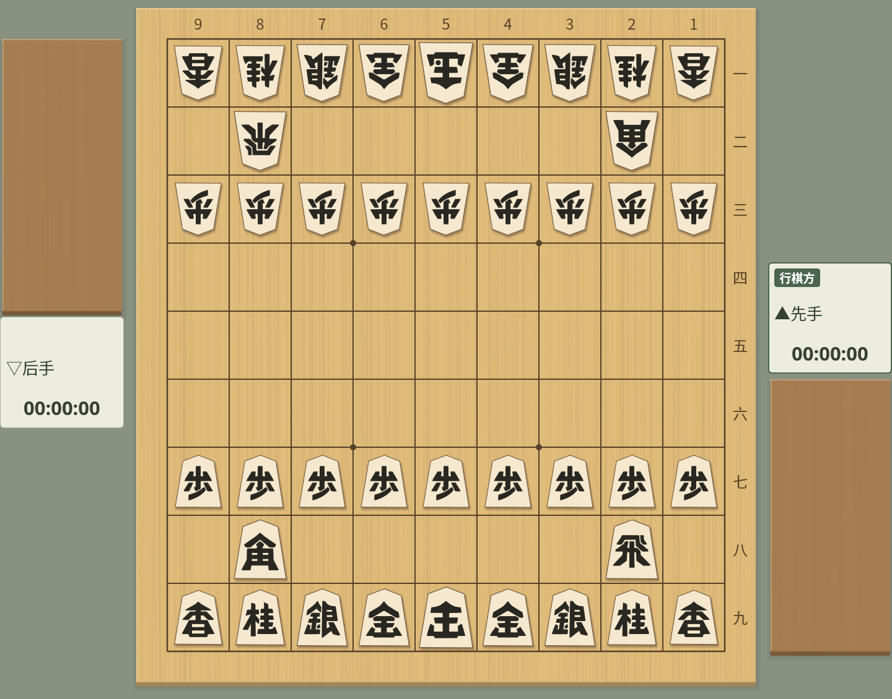

棋子样式
共用同一棋子外形的 40 种棋子
截图在 Linux 上以简体中文界面拍摄。
在外观窗口中选择棋子
在“视图”→“对局外观…”的“棋子”标签页中，可以选择标准棋子和 39 种变化。追加的棋子分为“虎纹”“原木”“浅色”“深色”“符号”“国际象棋”“字母”7 组。所选棋子会立即生效，下次启动时也会恢复。
以前的“糸柾”（细直纹）已直接成为标准棋子，原来的标准棋子可以作为“木纹”选择。如果以前选择了“糸柾”，会在保持外观不变的情况下切换为“标准棋子”。
棋盘上、持驹、主要变化、诘棋等所有棋盘都使用相同的棋子。配色、棋子大小和阴影可以在“对局外观”的“详细设置”中调整。

20 种变化
所有变化的外形、明朝体文字和大小都与标准棋子相同，通过改变木纹和色调来搭配不同的棋盘。默认仍为“标准棋子”。
| 组 | 棋子样式 |
|---|---|
| 虎纹 | 浅虎纹・绢虎纹・琥珀虎纹・赤虎纹・金虎纹 |
| 原木 | 浅木・木纹・琥珀直纹・竹纹・胡桃木 |
| 浅色 | 亚麻・淡樱・青瓷・月白・藤灰 |
| 深色 | 乌木・铁蓝・森林绿・葡萄紫・墨金 |
浅色和原木的棋子使用深色文字，深色的棋子使用浅色文字。成驹以朱色或明亮的红色文字区分。


浅虎纹


乌木
战国汉字
“符号”组中的“战国汉字”是把王、步等文字与武将头盔融为一体的粗犷抽象字形的棋子。外形、各类棋子的大小和先后方向都与标准棋子相同。
在亚麻色的棋面上配以墨色文字，成驹以朱色区分。成银、成桂、成香为“全”“圭”“杏”。


战国汉字
国际象棋风格的棋子：Facet・Atelier・Ribbon
“国际象棋”组中，可以从线条硬朗的 Facet、雕刻风格的 Atelier、以轮廓表现的 Ribbon 各 3 种配色（木色・白色・墨色）共 9 套中选择。不使用汉字或字母，而以王冠、城堡、马、盾、枪等形状区分棋子。
五角形外形和各类棋子的大小与标准棋子相同。成驹的图案变为红色，王将和玉将使用相同的王冠。棋子的走法和持驹规则仍是将棋的规则。
在“推荐组合”中选择同名的项目，棋盘、驹台和背景也会一起配好。“墨色”是深色棋盘搭配浅色棋面的配色。


字母棋子：端正・凛・墨
“字母”组中有明朝体的端正、凛、墨 3 种字体，各 3 种配色（木色・白色・墨色），共 9 套。一般为黑色字母，成驹以同一字母的红色区分。
王・玉 = K、飞 = R、角 = B、金 = G、银 = S、桂 = N、香 = L、步 = P。五角形外形和各类棋子的大小与标准棋子相同，文字高度和留白也配合棋子大小调整。
在“推荐组合”中选择同名的项目，棋盘、驹台和背景也会变为样本的配色。棋子的走法和持驹规则与一般将棋相同。